سلسلات الوقوف والتوقّف
31 نصيحة.
1

الشاحنة غير متوقّفة بشكل صحيح، كما نرى في الصورة فإن الشاحنة ليست خارج الطّريق بالكامل، وهذا يشكّل خطر. لكي تكون الشاحنة متوقّفة بشكل صحيح فيجب أن تكون جميع عجلاتها خارج الطّريق التي تسير فيها العربات.
2
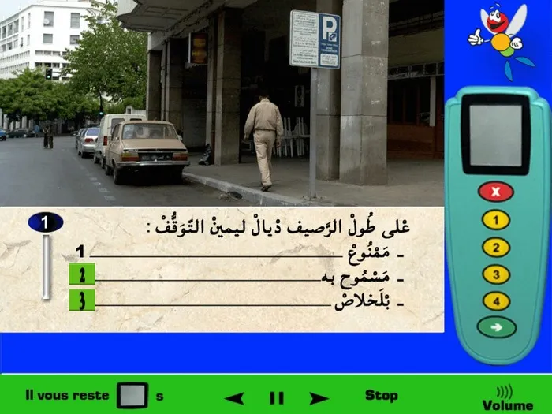
على طول الرّصيف على اليمين لا توجد علامة تمنع التوقّف إذن التوقّف مسموح به، والتوقّف سوف يكون مدفوع أي بلخلاص كما تشير إليه اللافتة على يمين الصورة.
3
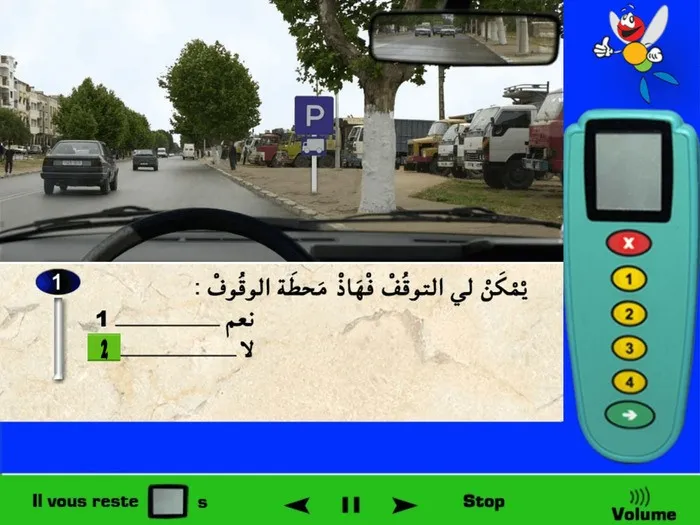
لا يمكنني التوقّف في هذا المكان، لأن الإشارة الطّرقية تعني محطة الوقوف، لكن بما أنه يوجد علامة تكميلية في الأسفل مرسوم فيها شاحنة فهذا يعني على أن محطة الوقوف خاصة بالشاحنات ولا يمكنني الوقوف فيها.
4
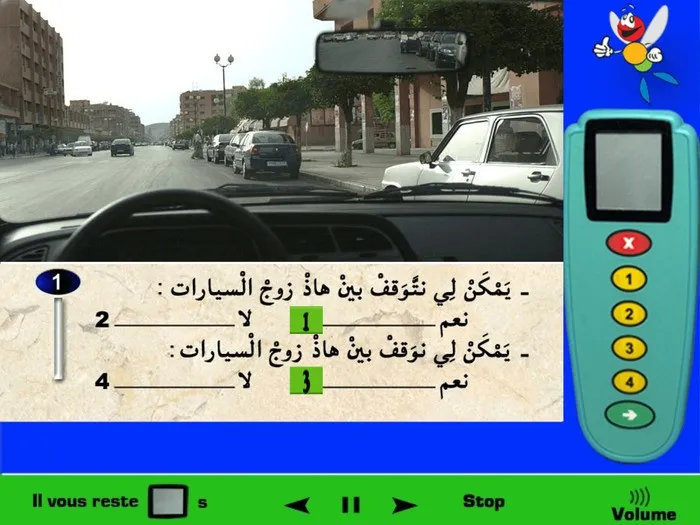
لا توجد علامة طُرقية تمنعني من الوقوف أو التوقّف. لذلك يمكنني الوقوف أو التوقّف بين السيّارتين.
5
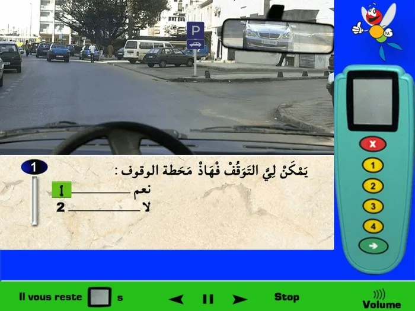
نعم يمكنني التوقّف، لأن العلامة الطّرقية فيها علامة تكميلية سيارة وهي تعني أن هذا المكان فهو محطة وقوف خاصة بالسّيارات. إذن يمكنني التوقّف فيه.
6
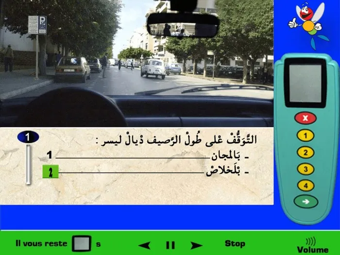
كما تُظهر الصورة فإن العلامة الطّرقية الموجودة على اليسار تشير على أنه يمكنني التوقّف في هذا المكان. وهذا التوقّف سوف يكون مدفوع (بلخلاص) كما تبيّن الصورة وليس مجّاني.
7
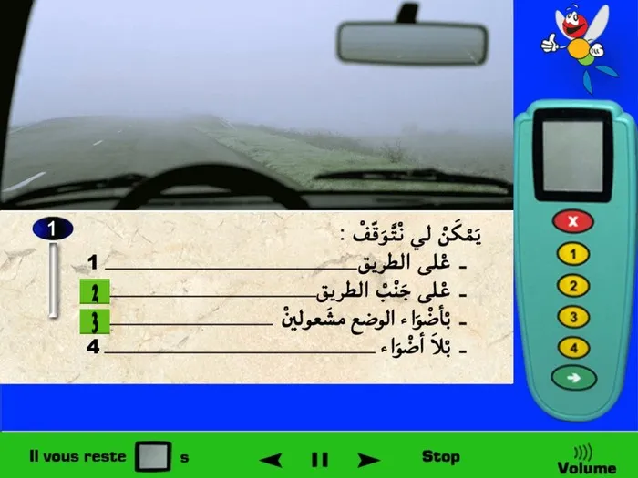
دائما التوقّف يكون على جنب الطّريق وليس على الطّريق (على الطّريق تعني أين تسير السّيارات)، وعند التوّقف في هذا المكان فيجب عليّ تشغيل أضواء الوضع لأنه يوجد ضباب ولكي ينتبه السائقون الاخرون على أن السيارة متوقّفة، إذا لم أترك أضواء الوضع مشتغلة والسيارة متوقّفة فبنسبة كبيرة لن يراها السائقون الاخرين وسوف أتسبب في حادثة. لذلك يمكنني التوقّف على جنب الطّريق وأضواء الوضع مشتغلة.
8
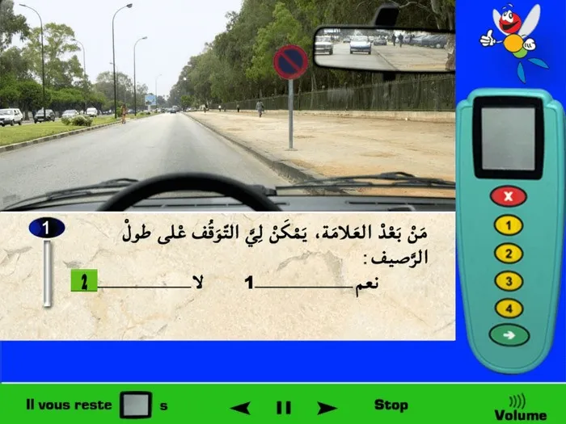
بعد العلامة لا يمكنني التوقّف، العلامة الطّرقية تمنع التوقّف على طول الرّصيف من عند العلامة إلى ملتقى الطّرق القادم.
9
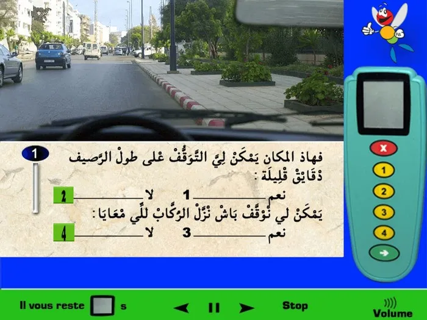
الرّصيف لونه أبيض وأحمر، يعني يمكن لي الوقوف ولا يمكن لي التوقّف، ولكن في هذه الحالة فأنا أتواجد قرب ملتقى الطّرق، وفي ملتقيات الطّرق ممنوع الوقوف والتوقّف، لذلك حتى الوقوف ممنوع.
10
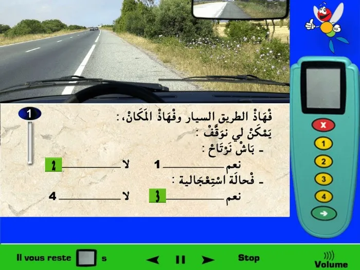
عندما أريد التوقّف فيجب عليّ التوقّف خارج الطّريق بالكامل (في قارعة الطّريق او جنب الطّريق) لا أتوقّف في الطّريق التي تسير فيها العربات وكما نلاحظ في الصورة فالسيّارة متوقّف في الطّريق وليس خارج الطّريق. لذلك أنا لست متوقّف في الكان المناسب.
11
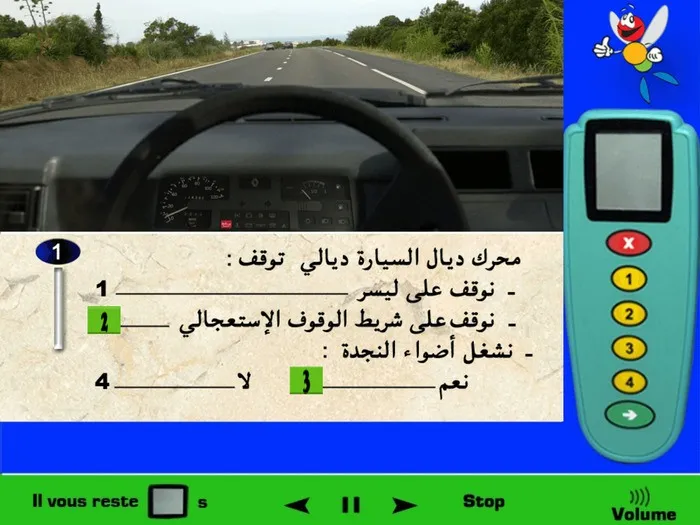
عندما تتوقّف السيارة بسبب مشكل ما فيجب عليّ أن أقوم بتشغيل أضواء النّجدة لكي أنبّه السائقين الاخرين على أنه يوجد لديّ عطب وينتبهوا لذلك، وثاني شيئ أقوم به فأقوم بتوجيه السّيارة للجهة اليمنى لشريط التوقّف الاستعجالي لو كنت في طريق سيار وليس للجهة اليسرى.
12
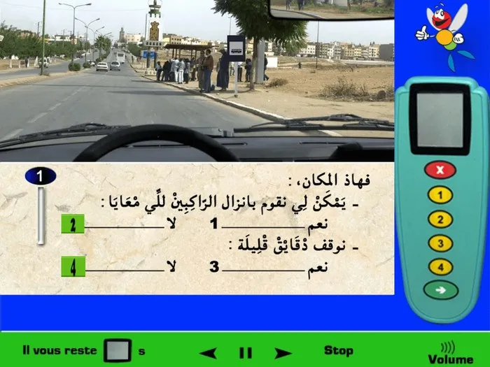
عندما أتواجد في مكان خاص، مثلا في هذه الحالة أتواجد في مكان خاص بالحافلات. في الأماكن الخاصة فممنوع عليّ الوقوف أو التوقّف. إذن لا يمكنني إنزال راكبين ولا يمكنني الوقوف لدقائق قليلة.
13
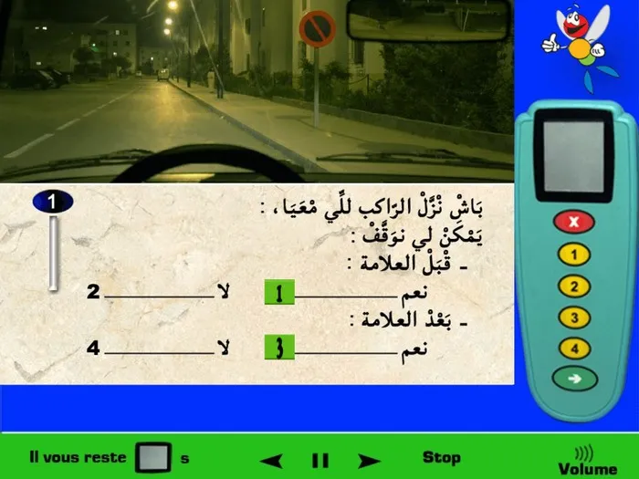
العلامة الطّرقية فهي تشير إلى أنه ممنوع التوقّف وليس الوقوف. إذن الوقوف مسموح به و يمكنني الوقوف لإنزال الركاب قبل العلامة أو بعد العلامة.
14
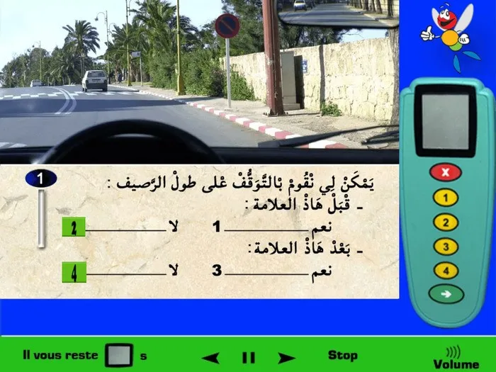
يوجد علامتين طُرقيتين تمنعانني من التوقّف، أول علامة هي العلامة الطّرقية الخاصة بأن التوقّف ممنوع وأيضا العلامة الثانية فهي الرّصيف المصبوغ بالأحمر والأبيض والذي يمنعني أيضا من التوقّف. إذن لا يمكنني التوقّف قبل وبعد العلامة.
15
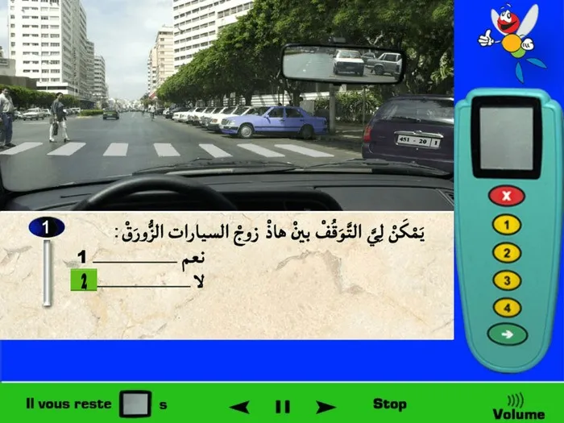
بين السيارتين يوجد ممر الراجلين، وفي ممر الراجلين فممنوع الوقوف او التوقّف.
16
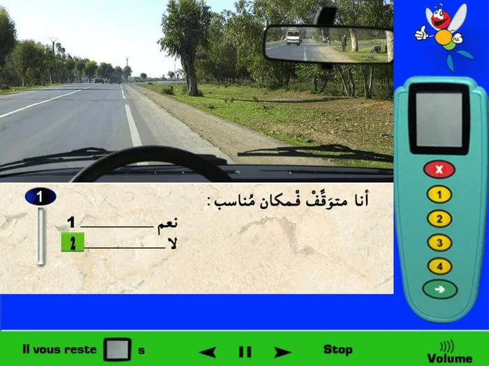
عندما أريد التوقّف فيجب عليّ التوقّف خارج الطّريق بالكامل أي في قارعة الطّريق وليس في الطّريق (لا أتوقّف في الطّريق التي تسير فيها العربات) وكما نلاحظ في الصورة فالسيّارة متوقّف في الطّريق وليس خارج الطّريق. لذلك أنا لست متوقّف في الكان المناسب.
17
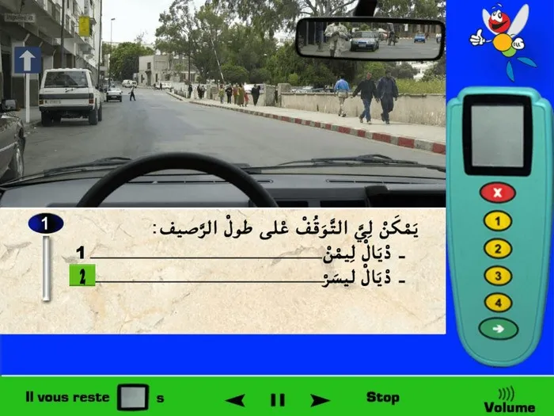
العلامة الطّرقية الموجودة على اليسار فهي تعني على أن الطّريق ذات اتّجاه واحد أي لا توجد عربات سوف تأتي من الاتّجاه المعاكس، وعندما تكون الطّريق ذات إتّجاه واحد فيمكنني الوقوف على الجهة اليمنى أو اليسرى إذا لم تكن هنالك علامات تمنع من ذلك، في هذه الحالة الرّصيف على اليمين فهو مصبوغ بالأحمر والأبيض إذن التوقّف ممنوع فيه، ويمكنني التوقّف فقط على الجهة اليسرى.
18
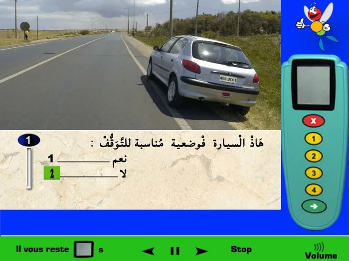
عندما التوقّف فيجب التوقّف خارج الطّريق بالكامل (في قارعة الطّريق او جنب الطّريق) وليس في الطّريق (لا أتوقّف في الطّريق التي تسير فيها العربات) وكما نلاحظ في الصورة فالسيّارة متوقّف في الطّريق وليس خارج الطّريق. لذلك السيّارة ليست في وضعية مناسبة للتوقّف.
19
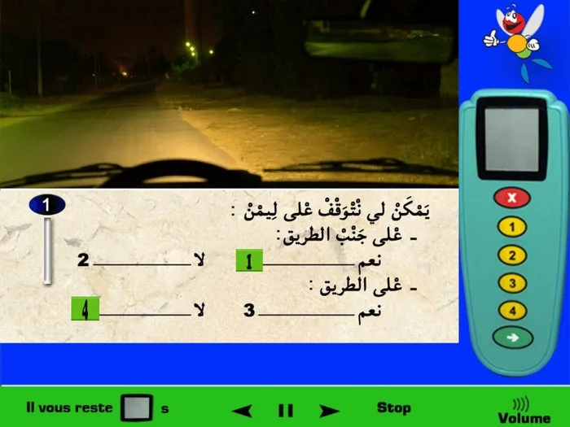
عندما أريد التوقّف فيجب عليّ التوقّف خارج الطّريق (في قارعة الطّريق او جنب الطّريق) بالكامل وليس في الطّريق (لا أتوقّف في الطّريق التي تسير فيها العربات) لذلك في هذه الحالة فيمكنني التوقّف على اليمين على جنب الطّريق ولا يمكنني التوقّف على الطّريق.
20
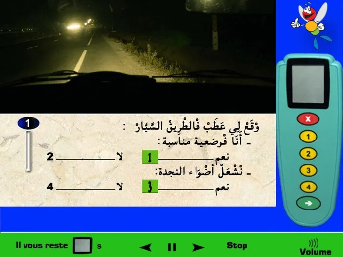
عندما يحدث عطب ما في السيارة بسبب مشكل ما فيجب عليّ توجيه السيّارة إلى خارج الطّريق (جنب الطّريق) على الجهة اليمنى كما في الصورة. ويجب عليّ أن أقوم بتشغيل أضواء النّجدة لكي أنبّه السائقين الاخرين على أنه يوجد لديّ عطب وينتبهوا لذلك. إذن في هذه الحالة فأنا في وضعية مناسبة ويجب عليّ كذلك تشغيل أضواء النجدة.
21
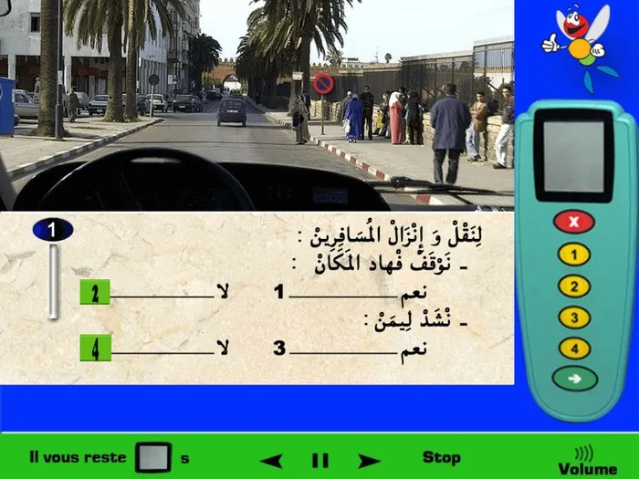
توجد علامة في الأمام خضراء تشير على أن المكان خاص بالحافلات، وفي الأماكن الخاصة فممنوع علينا الوقوف او التوقّف، وأيضا لا يمكنني الانحياز لليمين والسّير لانه سوف أصطدم بالراجل المتواجد على الطّريق.
22
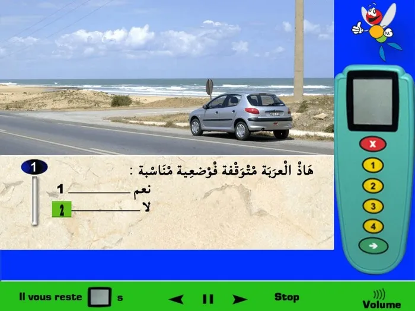
العربة متوقّفة على جانب الطّريق وهذا جيّد، لكن لا يمكن التوقّف في هذا المكان لانه يوجد ملتقى طرق، وفي ملتقيات الطّرق فممنوع الوقوف او التوقّف. لذلك العربة غير متوقّفة في وضعية مناسبة.
23
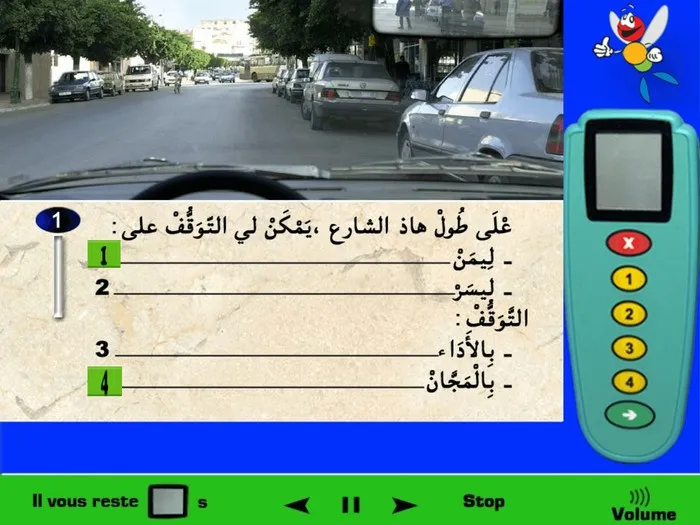
الطّريق ذات اتّجاهين (كاتدي وتجيب) يعني أنه مسموح عليّ فقط التوقّف على الجهة اليمنى، كما أن التوقّف بالمجان لأنه لا توجد علامة تشير على أن التوقّف مدفوع (بلخلاص).
24
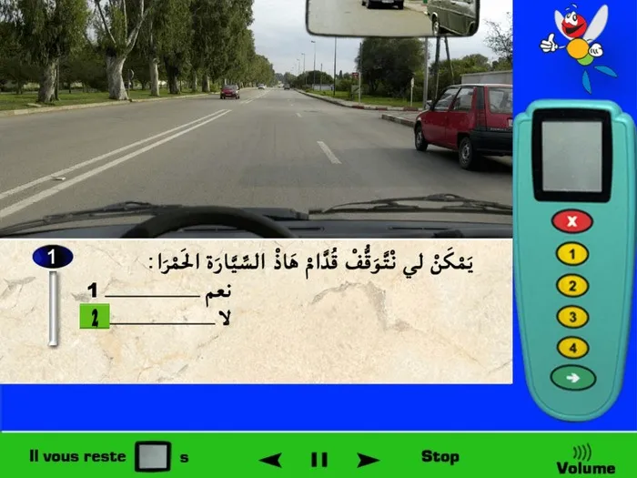
الرّصيف مصبوغ باللون الأبيض والأحمر وهو يشير على أن التوقّف ممنوع، أيضا نتواجد قرب ملتقى الطّرق والتوقّف ممنوع أيضا. لذلك لا يمكنني التوقّف أمام هذه السيّارة الحمراء.
25
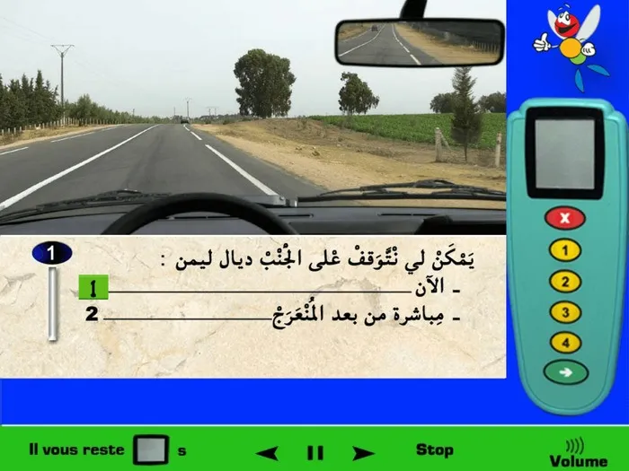
التوقّف على جنب الطّريق يجب أن يكون قبل المنعرج ب 40 متر أو بعد المنعرج ب 40 متر كذلك. يعني يمكنني الان التوقّف عل جنب اليمين للطّريق لأنه توجد مسافة كافية قبل المنعرج، ولا يمكنني التوقّف مباشرة بعد المنعرج لأنه يجب ترك مسافة 40 متر على الأقل للتوقّف بعد المنعرج وليس مباشرة.
26
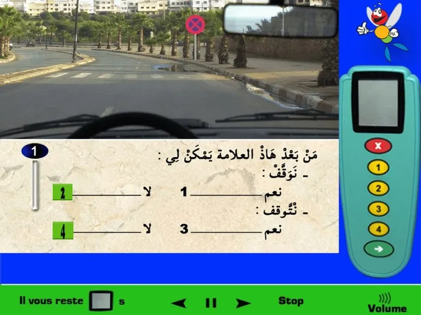
العلامة الطّرقية تشير إلى أنه ممنوع الوقوف أو التوقّف حتى ملتقى الطّرق القادم.
27
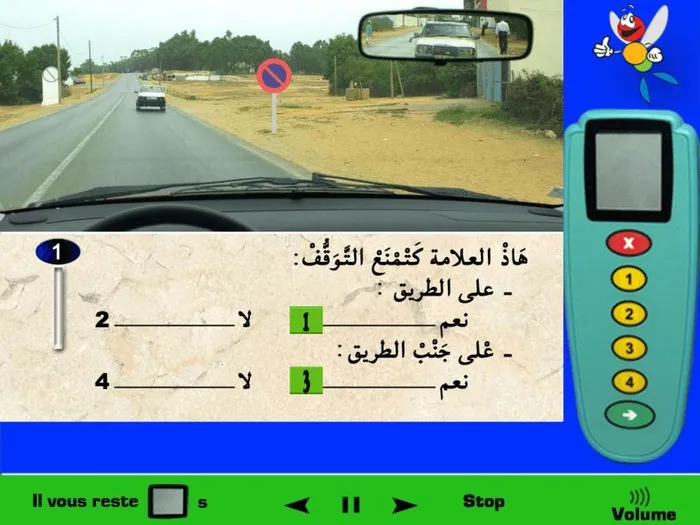
لا يوجد فرق بين المنع من التوقّف على الطّريق أو المنع من التوقّف على جنب على الطّريق. عندما توجد علامة المنع من التوقّف فإن المنع ممنوع على الطّريق وعلى جنب الطّريق. إذن العلامة تمنعني من التوقّف على الطّريق وتمنعني كذلك من التوقّف على جنب الطّريق.
28
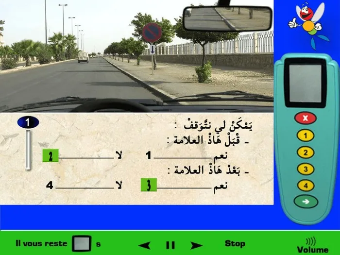
العلامة الطّرقية تشير على المنع من التوقّف، لكن يوجد سهم تكميلي تحت العلامة وهو يُشير على أن التوقّف ممنوع قبل العلامة فقط وليس بعد العلامة. يعني لا يمكنني التوقّف قبل العلامة، لكن يمكنني التوقّف بعد العلامة.
29
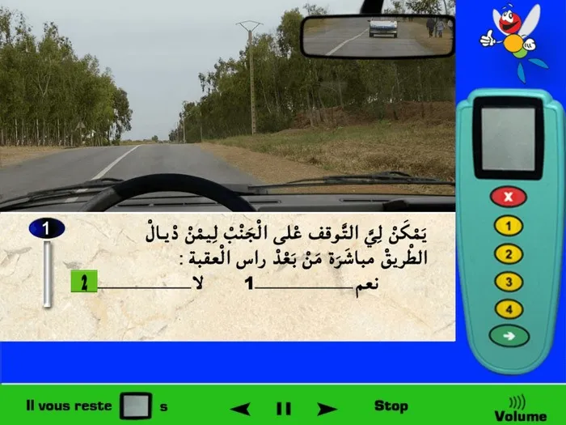
ا يمكنني التوقّف عل جنب اليمين للطّريق مباشرة بعد رأس العقبة لأنه يجب ترك مسافة 40 متر على الأقل للتوقّف بعد رأس العقبة وليس مباشرة.
30
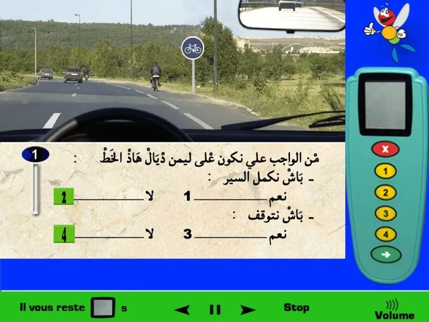
العلامة الطّرقية تعني ممر خاص أو إجباري للدّراجات، وفي الممرَّات الخاصة فلا يمكنني السّير فيها ولا يمكنني التوقّف فيها أيضا.
31
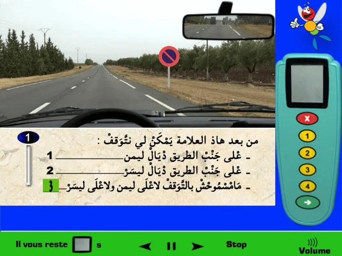
العلامة تعني المنع من التوقّف، إذن لا يمكنني أبدا التوقّف على الجهة اليمنى أو اليسرى. (أصلا ممنوع التوقّف على الجهة اليسرى من الطريق حتى وإن لم تكن علامة المنع موجودة عندما تكون الطّريق ذات اتّجاهين (تدي تجيب)).